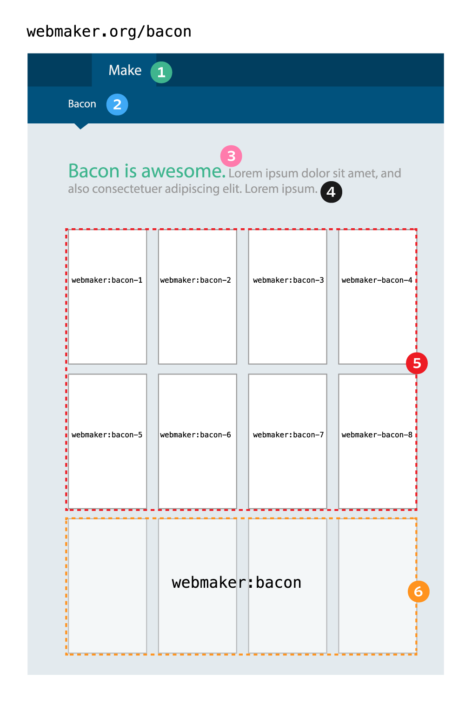

How to create webmaker galleries and add content
This guide uses a fictional gallery called '/bacon' on webmaker.org

- Choose a main section of the site (Explore, Make, Teach)
- Choose a navigation label for the gallery
- Write a main heading. It should be a short phrase that describes the main focus of the gallery.
- Write a short, descriptive paragraph to support the heading.
- Lead gallery: Login to makeapi.webmaker.org to tag makes for the lead gallery. You should use tags in the following format:
webmaker:keyword-#
where # is the position of the make in the gallery.
- The area below the gallery can be filled with makes using tags in the following format:
webmaker:keyword